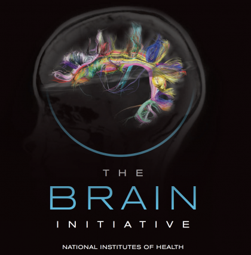

Data "sharing" dilemmas
October, 4th 2018
BRAIN Initiative Working Group 2.0 Workshop
Ariel Rokem, The University of Washington eScience Institute
Follow along at:


Data science in academia
Developing tools and techniques for data-intensive science
Practicing open and reproducible science
Establishing career paths for data scientists
Inter-disciplinary by design
What is the value of data and code "sharing"?
Reproducibility

Modern scientific data is digital
Exact copies can be made
Provenance of results often involves multiple processing steps
In principle: can be exactly reproduced
Reproducibility
"An article about computational result is advertising, not scholarship. The actual scholarship is the full software environment, code and data that produced the result."
What is the value of reproducible research?
Improved work and work habits
Improved team-work
Greater impact: through reuse, extension and citation by others
Greater continuity
What is the value of reproducible research?
Stewardship of public goods
Public access
Challenges to reproducible research
Technical challenges
Social challenge
Socio-technical challenges
Development and adoption of data standards
Development and maintenance of analysis software
Development and adoption of tools for scalable data analysis
Workforce development: training, incentives and careers
Data standards
The Brain Imaging Data Standard
Developed through and open design process
Supported by INCF
Open-source software for science


Challenges for scientific software
Sustainability
Rigorously evaluate open source software
Provide a canonical citation for software that meets these standards
Bringing software and code together
What are the requirements?
Bring the compute to the data
Scalable computing
Provide useful interfaces
Facilitate interoperability
Control access
Platforms for public data/compute
OpenNeuro
BrainLife
Grew out of IPython (an interactive Python shell)
Awarded the 2018 ACM Software System Award
The Jupyter notebook

Arguments against availability of data and code
Focusing on the wrong things
Waste of effort and resources
Provides a disincentive to doing hard/risky experiments
Ways to mitigate these
Make data and code publication easier
Publish parts of the data
Reasonable data embargos
Provide high incentives for developing valuable data
NeuroVault


Amyotrophic Lateral Sclerosis (ALS)

Classify patients based on the tissue properties in this part of the brain
Random Forest algorithm => 80% accuracy
How would we extend these findings?
AFQ-Browser
A web-based application
Builds a web-site for a diffusion MRI dataset
Automatically uploads the website to Github
https://yeatmanlab.github.io/Sarica_2017
Exploratory data analysis
Enhances published results
Linked visualizations facilitate easy exploration
Enables new discoveries in old datasets
Automatic data sharing

Further exploration

Training for data science and neuroscience
Methods in data science are rapidly changing
Tools and practcies that are not usually part of the standard neuroscience curriculum
Learning often require substantial hands-on experience
Communities of practice and training
Hack weeks
Workforce development


Contact information